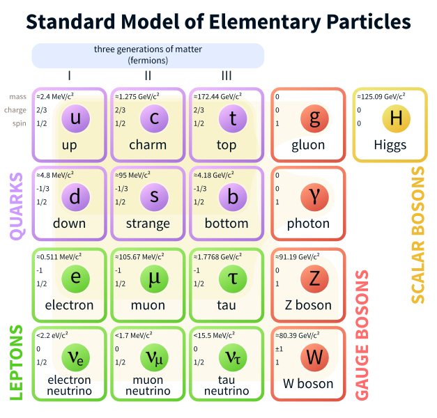

The Standard Model
The fundamental idea in particle physics is that everything at its most fundamental level can be described as particles interacting. These particles and their properties are catalogued in something called the standard model. Let’s
begin to scratch the surface of the elements of the standard model.
Let’s first look at the nucleus of common matter – protons and neutrons. These protons are in fact composite particles, meaning they are in fact made of even
smaller particles. In the case of protons and neutrons, they are composed of particles called quarks. These quarks are held together by particles called gluons. Let’s have a look at some of the properties of the constituent quarks
of protons and neutron. They are the ‘up’ and ‘down’ quarks.
MeV is a unit used a lot in particle physics – for our purposes just know that it’s a very small amount of mass. What’s more important is to consider these particle’s masses compared to each other (their relative masses).
The proton
is made of 2 ‘up’ quarks and 1 ‘down’ quark while the neutron is made of 2 ‘down’ quarks and 1 ‘up’ quark. One can see that if we add the charges for the proton and neutron, we get the expected answers – the proton has an electric
charge of +1 while the neutron is electrically neutral (ie has an electric
charge of 0). The ‘up’ and ‘down’ quarks are by far the most common quarks we see around us in everyday stuff, but they are not the only quarks in the
universe. The ‘up’ and ‘down’ quarks are called the ‘first generation’ of quarks, since they are the lightest pair of quarks. There are two more generations of quarks – each generation has a pair of quarks with charges analogous
to the ‘up’ and ‘down’ quarks higher mass. You can consider these higher generation of quarks as ‘heavier versions’ of the ‘up’ and ‘down’ quarks. Electrons, unlike protons and neutrons, are fundamental particles. Electron belong
to a class of particles called leptons. Like quarks, leptons come in pairs too; the ‘sibling’ to each lepton is its neutrino so, for example, the electron’s pair is called the ‘electron neutrino’. Let’s look at a table like we
did for the ‘up’ and ‘down’ quarks.
Note that the electron is significantly lighter than either of the lightest quarks and the neutrino is much, much lighter still. In fact, so light that when the standard model was formulated
it was considered massless! Now like quarks, leptons have generations too. There are two more known generations called the muon and tao generations. Each generation has a pair like the electron and the electron neutrino but not
much is known about the masses of the neutrinos since it’s a huge experimental challenge. Both leptons and quarks are under the broader class of particles called fermions. These are the so called ‘matter’ particles. Now you might
wonder “why are there two categories or fermions and what’s the difference between leptons and
quarks?” The answer is – leptons and quarks interact with a slightly different set of fundamental forces.
There are four fundamental
forces in the universe - electromagnetism, the weak force, gravity and the strong force. Both leptons and quarks can interact dictated by the first three forces listed but only quarks interact with the strong nuclear force. Each
of these forces has particles that mediate interaction. These particles are called bosons.
Let’s look at a helium atom’s nucleus with 2 neutrons and 2 protons. The particles that correspond to the strong force are called
gluons. These gluons hold together the quarks into protons and neutrons. The resultant protons and neutrons are yet again bound by gluons, holding together the nucleus. Continuing with a helium atom, we know that the electrons
are held to the nucleus by the electrostatic force since electrons and the nucleus have opposite charges. The boson that corresponds to electrostatic force is called the photon.The Weak force in involved with radioactive decay.
You might familiar with radioactive decay if you’ve come across alpha, beta or gamma decay. Let’s look at a beta decay. *INSERT DRAWN PICTURE OF THE
BETA DECAY!!!!*
Once the down quark converts
to an up quark, it releases a boson. This boson then decays into an electron and anti-electron neutrino (explained later in text). This interaction will be discussed in more detail later, it’s here to illustrate how plays
a role in beta decay and the weak force more generally.
When it comes to quantum theories, gravity is always the cosmologically large elephant in the room. Gravity has never been completely well described by particle physics
and there is no evidence for a gravity related boson a.k.a. the hypothetical “graviton”. The accepted theory of gravity is Einstein’s theory of General Relativity and it’s a completely independent physical theory.
The last,
relatively independent boson is the Higgs boson. This is a recently confirmed particle (in 2012) but was theorised decades ago. This is a more complicated boson. The field associated with the Higgs boson is responsible for giving
some fundamental particles their mass.
We also have anti-particles like the mentioned anti-electron neutrino. Anti-particles have the exact opposite properties and their particle twins but have the same mass. For example,
we also have an anti-electron (called the ‘positron’). It weighs the same as the electron but has a +1 electric charge.
To the right is a picture of the entire standard model to summarise what’s been discussed.
Figure 1. Table of quark charge & mass, the constituents that make up a proton.
Figure 2. Electron & Electron Neutrino information.
